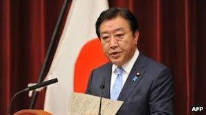

Morihiro Hosokawa
(09AGO1993-28ABR1994)
Tras servir por dos términos en la Dieta de Japón, en 1983 se convirtió en gobernador de Kumamoto, hasta 1991.2 En 1992 abandona el PLD al considerar que era un partido corrupto y funda el reformista Nuevo Partido de Japón (NPJ), con el que accedió a un escaño en la Cámara de Consejeros.2 Primer ministro[editar] Elecciones de 1993[editar] Artículo principal: Elecciones generales de Japón de 1993 En las elecciones generales de julio de 1993, por primera vez en treinta y ocho años, el PLD perdió la mayoría absoluta en la Dieta, obteniendo tan solo 223 de los 511 escaños de la Cámara de Representantes de Japón. El gobierno de Kiichi Miyazawa, antiguo primer ministro, se vio desbancado del poder por una amplia coalición formada por ocho partidos políticos de ideología muy diversa, tanto de izquierda (el Partido Socialista de Japón y el Partido Socialista Democrático) como de derecha (Partido de la Renovación de Japón, Nuevo Partido de Japón, y Nuevo Partido Sakigake), e incluso formaciones de política religiosa como Komeito. Cualquier negociación del PLD para formar gobierno fracasó, y el 6 de agosto de 1993, Hosokawa, como líder del NPJ y de la coalición, fue elegido para el cargo de Primer ministro con 262 votos a favor, 224 en contra y 25 abstenciones. El Primer ministro era el único miembro del NPJ en el gabinete, dominado en su mayoría por el Partido de la Renovación y los socialistas.3 Walter Mondale, entonces embajador de Estados Unidos en Japón, afirmó que Hosokawa tenía una habilidad "Kennedy-esca" para centrarse en sus ideales. No obstante, la ambiciosa agenda de Hosokawa no pudo cumplirse del todo por diversos factores. Para empezar, la coalición parlamentaria sobre la cual se apoyaba era muy frágil, y no tenía ningún rasgo ideológico en común más que su aversión a la corrupción dentro del PLD y su intención de reformar la ley electoral para evitar el gerrymandering y las donaciones corporativas, con las cuales dicha formación se había mantenido en el poder durante casi cuatro décadas.4 Ninguna de las fuerzas políticas dentro de la coalición tenía suficiente peso coma para imponerse sobre las otras: el partido más grande de la coalición, el PSJ, tenía tan solo 70 escaños, es decir, 153 menos que el PLD por sí solo. El nuevo gobierno también estaba en desacuerdo con la burocracia del sistema político en general de Japón, que buscó reformar después de décadas de atrincheramiento burocrático bajo el PLD.5
Tsutomu Hata
(28ABR1994-30JUN1994)
En 1991 fue nombrado Ministro de Finanzas en el gabinete de Kiichi Miyazawa, hasta diciembre de 1992. No obstante, en 1993 abandonó el Partido Liberal Democrático y fundó el Partido Renovación Japón junto con el miembro veterano del PLD Ichirō Ozawa, y formaron parte de la coalición gubernamental anti-PLD de Morihiro Hosokawa en ese año. Llegó a ser Ministro de Exteriores en el gabinete de Hosokawa. El 28 de abril de 1994 Hosokawa renuncia y Hata asume como Primer Ministro. Sin embargo, el Partido Socialista de Japón había abandonado la coalición, desapareciendo la anterior mayoría de la coalición en la Dieta de Japón. Evitando una moción de censura, Hata decidió renunciar en junio, permitiendo al líder del Partido Socialista Tomiichi Murayama asumir el cargo de Primer Ministro. Con la fusión del Partido Renovación en el Shinshintō (Partido de la Nueva Frontera) en 1996, Hata decidió competir el liderazgo del partido contra Ozawa. Tras perder la disputa, abandonó el partido y él y unos doce miembros de la Dieta formaron el Partido del Sol ( 太陽党 Taiyōtō?), partido de corta duración ya que en enero de 1998 el Partido del Sol se adhiere al Partido de Buen Gobierno; Posteriormente, se uniría al Partido Democrático de Japón en abril de 1998. Desde entonces, Hata permanecerá en el PDJ como “consejero supremo” del presidente del partido, Ichirō Ozawa.
Tomiichi Murayama
(30JUN1994-11ENE1996)
En 1991 fue nombrado presidente del Comité para los Asuntos de la Dieta en el Partido socialista (equivalente al portavoz del partido en la Asamblea nipona), uno de los puestos más importantes en los partidos políticos japoneses. Este puesto le valió para darse a conocer tanto entre el público japonés como en la Dieta. En las elecciones generales de 1993 el Partido Liberal Democrático perdió la mayoría en la asamblea y se formó un gobierno de coalición entre un batiburrillo de partidos; El Partido Socialista de Japón se unió a la nueva coalición gubernamental, que existió hasta la primavera de 1994. Murayama no participó en el nuevo gobierno, pero el 20 de septiembre del mismo año fue elegido líder del partido socialista. Primer ministro[editar] La coalición gubernamental fue inestable y en un año se sucedieron 2 gobiernos; Con la caída del segundo gobierno de coalición (liderado por Tsutomu Hata), el 30 de junio de 1994 Murayama fue nombrado Primer Ministro. El nuevo gabinete estaba formado por una coalición del Partido Socialista (PSJ), el Partido Liberal Democrático (PLD) y el Nuevo Partido Sakigake.3 Pero dada la rareza de la coalición (por su composición), este nuevo gabinete no tuvo un liderazgo fuerte. El PDL, además, recibió un gran número de ministerios, entre ellos el estratégico Ministro de Industria y Comercio Internacional (MICE), por lo que el partido salió bastante bien parado en este nuevo gobierno.3 Inmediatamente formó gobierno, Murayama se encontró con el problema de que su propio partido era contrario al Pacto de Seguridad y Cooperación entre Japón y los Estados Unidos vigente desde 1960, pero él consideró que el pacto estaba acorde con la Constitución de Japón y no modificó el Tratado; Esta decisión decepcionó a muchos socialistas, lo que mermaría enormemente el apoyo popular a su partido. Lo cierto es que su etapa de gobierno no estuvo ausente de problemas: Desde el primer momento hubo de hacer frente a la grave crisis económica que se abatía sobre el país desde principios de los 90, con una importante deflación y un creciente desempleo. Lejos de lograr contrarrestar sus efectos, tiempo después, el 17 de enero de 1995 tuvo lugar el Gran terremoto de Hanshin-Awaji.4 El cataclismo causó graves daños en la Prefectura de Hyōgo (especialmente la ciudad de Kobe), lo que conllevó un hundimiento de la ya dañada economía japonesa. Por su parte, el gobierno recibió numerosas críticas acusado de una mala coordinación en la ayuda a las víctimas. Dos meses después, el 20 de marzo, la secta Aum Shinrikyo llevó a cabo un atentado en el Metro de Tokio utilizando Gas sarín, con un gran impacto en la sociedad. En contraste con estas desgracias, su administración será especialmente recordada por su intensa actividad en el exterior (concretamente, Vietnam, China y Corea del Sur) por la política de reconciliación con estas naciones y de disculpa por los crímenes de guerra cometidos en la II Guerra Mundial. Esta política se vio eclipsada por el discurso «En ocasión del quincuagésimo aniversario del fin de la guerra» pronunciado el 15 de agosto de 1995, en el 50º aniversario del final de la guerra.5 A comienzos de 1996, tanto la baja popularidad del gobierno como la persistente crisis económica llevaron a Murayama a plentarse su intención de renunciar como Primer Ministro, pero sus seguidores se oponían, y por un momento no se retiró. Finalmente, acabó renunciando y fue reemplazado por Ryūtarō Hashimoto, del Partido Liberal Democrático.6 En la actualidad[editar] En las elecciones generales de 1996, el Partido Socialista perdió muchos escaños en la Cámara de Representantes consecuencia de la impopularidad del gabinete de coalición (especialmente, por el desengaño de muchos de sus votantes ante la política practicada por Murayama). Consecuencia de estos resultados, se refundó como Partido Socialdemócrata y Murayama fue elegido como Presidente del mismo. Aunque siguió durante algún tiempo más en la dirección del nuevo partido, en el año 2000 anunció su retirada de la Política activa.
Ryutaro Hashimoto
(11ENE1996-30JUL1998)
Keizo Obuchi
(30JUL1998-05ABR2000)
Yoshiro Mori
(05ABR2000-26ABR2001)
2000 ABR05 asume el cargo de primer ministro por el
PLD
2001 Feb09 Hundimiento del Ehime Maru por un
submarino
nuclear de EEUU. murieron 9 personas. Enterado del
accidente, el primer ministro siguió jugando golf.
Sobrevivió a la censura pero dimitió un mes después
al
perder el apoyo de sus aliados políticos. Cayó a 6%
su
popularidad.
Junichiro Koizumi
(26ABR2001-26SET2006)

2001 ABR26 asume el cargo de primer ministro por
el
PLD
Shinzo Abe
(26SET2006-26SET2007)
2006 SET26 asume el cargo de primer ministro por el
PLD
Yasuo Fukuda
(26SET2007-24SET2008)
2007 SET26 asume el cargo de primer ministro por el
PLD
Taro Aso
(24SET2008-15SET2009)
2008 SET24 asume el cargo de primer ministro por
el
PLD
El
ministro japonés del haraquiri
Yukio Hatoyama
(15SET2009-08JUN2010)
2009 SET16 asume el cargo de primer ministro por el
PLD
Naoto Kan
(08JUN2010-02SET2011)
2010 JUN08 asume el cargo de primer ministro por
el
PLD
2011 MAR11 Terremoto de Fukushima
de magnitud 9,1y tsunami que
creó olas de hasta 0,5 metros, murieron
18,000 personas
2011 AGO26 Renuncia Naoto Kan por falta de
liderazgo
tras el terromoto y desastre nuclear de Fukushima.
Deja una lista de desafíos: una limpieza nuclear
que
podría tomar décadas, una economía en recesión, un
yen creciente, una deuda pública del doble del
tamaño
de la economía de Japón y costos de salud y
seguridad
social en alza.
Yoshihiko Noda
(02SET2011-26SET2012)

2011 SET02 asume el cargo de primer ministro por el
PLD
Shinzo Abe
(26SET2012-16SET2020)
2012 DIC26 asume el cargo de primer ministro por
el
PLD
Era Reiwa 令和 (2019 - 2021)
Shinzo Abe
Año 2020
2020 AGO28 Anuncia su dimisión por motivos de saludYoshihide Suga
(16SET2020)
2020 SET20 Asume el cargo de primer ministro
Año 2021
FEB10 Cae su aprobación a 38%.
FEB13 Terremoto de Fukushima y Miyagui de 7.3
grados de magnitud y un fallecido
FEB23 El emperador Naruhito cumplió 61 años
MAR20 Terremoto en Miyagi de 7.2 de mgnitud que
generó
un tsunami de un metro, no se reporta víctmas ni
daños
materiales
SET03 Suga renuncia a postularse a la reelección.
Fumio Kishida, Sanae Takaichi candidatos
Fumio Kishida
(30SET21)
2020 SET20 Asume el cargo de primer ministro
Panel de Navegación
Diarios Japoneses
- Nippon
- Japan Forward
- Kyodo News
- The Japan Times
- The Mainichi
- Asahi Shimbun
- NHK World Japan
- Japan Today
- Nikkei Asia